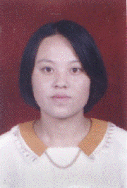

青春在拼搏中闪光
尊敬的各位领导、老师，亲爱的同学们：
你们好！我叫万玉萍，是东北师范大学数学系的学生，今天我汇报的题目是：青春在拼搏中闪光。
说起来我能念上大学是幸运的，我没有上过高中，没有千军万马过独木桥的经历。初中毕业的时候，我直接考取了沈阳市新民师范学校。中师四年，我过得紧张而愉快。我品尝到了付出的艰辛，更感受到了收获的喜悦。我连年被评为“优秀学生”、“优秀学生干部”，93年被辽宁省教委评为优秀师范生，94年6月我光荣地加入了中国共产党，94年7月以学校全面考核第一名的成绩，被保送到东北师大数学系学习。
迈进东北师大的校门时，别提我心里有多高兴了。面对崭新的日
子，我有太多太多的幢憬。我相信我的青春将在这里变得更加绚丽多姿。然而事情往往并不那么一帆风顺。我保送的是数学系。中师四年开的课程，多是注重体、美、音的能力课，在文化课方面也比较注重文科，所以我的数学底子薄得可怜。
我真担心我学不好数学，担心跟不上同学们，担心期末考试不及格。我清楚地记得我上大学后的第一堂课。讲的是数学分析里的第一章——函数。我兴致勃勃地坐在了第一桌。上课后老师说：本书第一章函数的大部分内容在高中就已经学过了，这堂课大家以自学为主。我随着同学们一起翻开了课本。那些所谓的高中已经学过了的知识，对于我全是生面孔。我一行一行地看，一个字一个字地读。我的同桌已经全部读完老师指定的内容时，我却刚刚读完两页而且有几处看不懂。下课铃声响了，我只读完了4页，还有27页没有看。这就是我走入大学的第一堂课。
接下来的日子就更难过了。一周课下来，我真的不知用怎样的词语去形容我的感觉。是灰心？是绝望？都不够贴切。以前那活泼的音、体、美课没有了，我酷爱的文学课也消失了。每天除了数学分析就是高等代数，上完高等代数、又是解析几何，从一维空间到N维空间，从坐标到极限，老师讲得头头是道，同学品得津津有味，而我却是擀面杖吹火——一窍不通。每节课教师都要讲十几页到几十页讲义，任凭我思维飞快运转，任凭我注意力高度集中，我都无法跟上老师的进度。每天晚上，我都要一直学到很晚，去“消化”当天的课程，可是要想把当天课程全部“消化”，那简直太难了，即使能消化一半也能为我平添一丝安慰。有时，为能弄懂那三五行中西混合的文字就得花费我一两个小时的时间，一天下来脑袋总是胀胀的，第二天还得在这个基础上继续输入新的知识，我真的吃不消了。
这时，我们进行了入学以来的第一次小考，我的试卷是老师批改后亲自送到我手上的。老师和蔼地跟我说；以后要努力啊！我看了看试卷，35分。红红的35分。对我一周的学习进行检验，就是这个结果。一周以来，我起早贪黑换来的就仅仅是35分。就在那一刻，我的大脑一片空白，我再也无法控制自己，泪水不由自主地流了下来。
那天晚上，我整整思考了一夜，我是一个要强的女孩子。从小学一直到中师，我没有品尝到落后的滋味，我也不甘于落后，现在由于起点不同，我暂时落后了，但并不意味着我永远落后。同学们能学好数学，我也一样能学好，甚至要超过他们。我就这样下定了决心，开始啃我的“天书”了。
我想，我首先要解决的问题是正视自己，确定正确的学习方式和方法。从何处入手呢？古人读书讲“书读百遍，其义自见”，我就想从“题做百遍，其义自见”入手，我要采取大量的做题，在做题过程中去掌握定理的方法，寻找一条适合我自己的路。
“课上一分钟，课下十分钟”。我先抓住课堂，课堂上认真听讲，听不懂的地方我先做上记号，课下再去解决，一处处抠懂，慢慢消化。有时课堂上听不懂的太多，课后就得花大量的时间。早晨我第一个来到教室，开始做题，演算；晚上，不知不觉中空荡荡的教室又只剩下我一个人，我知道宿舍楼门要关了，于是赶紧收拾书包向宿舍跑去。可有几次我还是被关到楼外。熄灯了，同学们都发出甜甜的鼾声，而我又要到走廊里加班，有的时候，实在太累了，我便靠着墙不知不觉地睡着了。时常在深夜被冻醒之后，继续学习；每当周末的早晨，同寝的姐妹们还是一副熟睡的幸福样，我已经背着书包去图书馆了。我几乎每天都这样埋头“啃”我的专业书，不停地去做习题，看书、做题已经成了我生活的主旋律，三年来我做题用过的草纸足以用斤来计算。
然而课后习题我能独立完成的寥寥无几，有思路就算不错了，有的时候我做几个小时可能一道题也做不出来。为了节省时间，提高效率，我又寻找到另一条捷径，那就是“不耻下问”。对“不耻”这两个字我体味也是比较深的。每次，任课教师答疑我都有成堆的问题，其中有大学的也有高中的。由于问题太多，教师答疑时间不够，我只有向同学请教，全年级八十几名同学我都视为自己的老师，总问同学问题，难免有时会给同学们问烦了，“连这个你都不会？”这是同学们经常问我的一句话，我也时常被问得不好意思，很尴尬，脸发烫，然而这题我的确不会我不能不懂装懂，我必须正视自己，不懂就问。我们班有个调皮的男同学跟我开玩笑说：“只因为有了你，我即便平时不学，考试也不会是最后一名了”，我知道他在开玩笑。但我认为这是真话。我每天都是紧张的，每天也都重复着课程由不懂到懂，习题由不会到会的过程，而这个过程我付出了很多汗水，我没有经历过高考，但我足以品尝到了争分夺秒、埋头苦读的滋味；我也不知“头悬梁，锥刺骨”是怎样的感觉，但漫漫寒夜的孤灯与寒冷，炎炎夏夜的飞蛾与蚊虫，也足以令我感到求学是何等的艰辛。三百多个不眠的日日夜夜过去了，我终于以年级第十名的成绩结束了大一的学业，我获得二等奖学金，并且被评为“优秀学生”。这个成绩对于别人来说可能是极其普通与平常的，而对于我却不同，这可以说是我摸爬滚打得来的成绩。面对成绩，我没有过多的欣喜，我知道这仅仅是我大学生活迈出的第一步。
接下来的两年的学习生活，我渐渐摆脱了中师数学知识底子薄所带给我的压力。我也可以尽情地畅游在数学知识的海洋里了。我付出了很多，回报也是丰厚的。两年我均获得了一等人民奖学金。在97年11月我还荣获了国家宝钢奖学金。全校6000多名本科学生中评选出12名宝钢奖学金，我能有幸占一席之地，这更说明了一个道理：世上无难事，只要肯攀登。
在刻苦努力学习的同时，我没有丢弃工作。三年多来，我先后担任了年级长、系红烛协会秘书长，系学生会副主席兼女生部长，系学生会主席等职务，初入大学我便被推选为年级长，我当时的处境真是泥菩萨过河自身难保，哪里有精力去当干部？但当我意识到我是年级仅有的两名党员中的一个时，我便接下了这副担子。我不能只为自己的学习而抛开其他的一切，三年来，我担任的工作多是没有具体明确的任务，而是需要全方位统筹的，因而工作更复杂，工作量更大。如何调好各部之间的关系，如何将整体工作搞上去，这也是我颇伤脑筋的事。我没有大块的时间去工作，只有采取“化整为零”的工作方法，由于身兼几职，因此学习与工作发生冲突，工作与工作发生冲突是常有的事；学习和工作上的压力是很大的，而我拥有的时间有限，我采取统筹方法，合理地制订计划，努力提高工作和学习效率。
在我大学二年级任系学生会副主席兼女生部长期间，主抓学习科研部、文艺部、女生部三个部的工作，当时学习科研部正在搞“制作教具”的科研活动，文艺部正准备搞一台综艺晚会，女生部正准备迎接校韵律操大赛，每天我既要领着队员们练韵律操，还要帮助文艺部编排节目，学习科研部的论文还要把关，这些工作都要在我不耽误学习的情况下进行，我只有充分利用早、中、晚的吃饭时间或周末的休息时间。有时排队打饭我也在琢磨舞蹈的动作，晚上睡梦中还在喊着练习韵律操的口号。我觉得作为一名学生干部，特别是一名学生党员，老师和同学把工作交给了你，你就应该不辜负他们，去挑起这份信任，同时更要挑起这份责任。
在我担任系学生会主席期间，成功地组织了“数苑风采”系列活动。在学校举行的学生“文明管理竞参月”活动中，数学系学生会又拿到了全部的七个奖项。在一年一度的评优活动中，我们数学系学生会又被评为“优秀学生会”。
在日常生活中，我也时刻不忘我是一名学生干部，我又是一名学生党员，要时时带头、事事垂范。在两年一次的献血中，尽管当时由于紧张的学习和工作，我的身体很虚弱，但我还是加入到了献血的行列，在校生活我的主要经济来源是我的家教费，但每次困难补助我都让给其他同学，每次捐款捐物，我又走到最前面；同学们思想上、生活上有困难我都主动去帮助……这些小事实在是太平常不过了，但是我想学生党员的模范作用就是体现在学习、工作中，体现在日常生活小事中。
三年多的大学时光已经走过，我不但在专业方面学到了很多知识，在生活上我也增添了许多感悟。在以后的生活道路上，还会有艰难与险阻，还会有失败与挫折，我坚信，我会以强者的姿态去面对，我会以顽强的拼搏去迎接。
最后，我把数学上一个普普通通的式子介绍给大家，与大家共勉。那就是：1＋1+1……一直加下去，等于无穷大。它告诉我们，一次拼搏再加上一次拼搏，人生要永无止息的拼搏下去，才能取得更大的成绩；它还告诉我们，追求一个目标，再追求一个目标……只有坚持不懈的追求下去，才能够达到光辉的顶点。
我真担心我学不好数学，担心跟不上同学们，担心期末考试不及格。我清楚地记得我上大学后的第一堂课。讲的是数学分析里的第一章——函数。我兴致勃勃地坐在了第一桌。上课后老师说：本书第一章函数的大部分内容在高中就已经学过了，这堂课大家以自学为主。我随着同学们一起翻开了课本。那些所谓的高中已经学过了的知识，对于我全是生面孔。我一行一行地看，一个字一个字地读。我的同桌已经全部读完老师指定的内容时，我却刚刚读完两页而且有几处看不懂。下课铃声响了，我只读完了4页，还有27页没有看。这就是我走入大学的第一堂课。
接下来的日子就更难过了。一周课下来，我真的不知用怎样的词语去形容我的感觉。是灰心？是绝望？都不够贴切。以前那活泼的音、体、美课没有了，我酷爱的文学课也消失了。每天除了数学分析就是高等代数，上完高等代数、又是解析几何，从一维空间到N维空间，从坐标到极限，老师讲得头头是道，同学品得津津有味，而我却是擀面杖吹火——一窍不通。每节课教师都要讲十几页到几十页讲义，任凭我思维飞快运转，任凭我注意力高度集中，我都无法跟上老师的进度。每天晚上，我都要一直学到很晚，去“消化”当天的课程，可是要想把当天课程全部“消化”，那简直太难了，即使能消化一半也能为我平添一丝安慰。有时，为能弄懂那三五行中西混合的文字就得花费我一两个小时的时间，一天下来脑袋总是胀胀的，第二天还得在这个基础上继续输入新的知识，我真的吃不消了。
这时，我们进行了入学以来的第一次小考，我的试卷是老师批改后亲自送到我手上的。老师和蔼地跟我说；以后要努力啊！我看了看试卷，35分。红红的35分。对我一周的学习进行检验，就是这个结果。一周以来，我起早贪黑换来的就仅仅是35分。就在那一刻，我的大脑一片空白，我再也无法控制自己，泪水不由自主地流了下来。
那天晚上，我整整思考了一夜，我是一个要强的女孩子。从小学一直到中师，我没有品尝到落后的滋味，我也不甘于落后，现在由于起点不同，我暂时落后了，但并不意味着我永远落后。同学们能学好数学，我也一样能学好，甚至要超过他们。我就这样下定了决心，开始啃我的“天书”了。
我想，我首先要解决的问题是正视自己，确定正确的学习方式和方法。从何处入手呢？古人读书讲“书读百遍，其义自见”，我就想从“题做百遍，其义自见”入手，我要采取大量的做题，在做题过程中去掌握定理的方法，寻找一条适合我自己的路。
“课上一分钟，课下十分钟”。我先抓住课堂，课堂上认真听讲，听不懂的地方我先做上记号，课下再去解决，一处处抠懂，慢慢消化。有时课堂上听不懂的太多，课后就得花大量的时间。早晨我第一个来到教室，开始做题，演算；晚上，不知不觉中空荡荡的教室又只剩下我一个人，我知道宿舍楼门要关了，于是赶紧收拾书包向宿舍跑去。可有几次我还是被关到楼外。熄灯了，同学们都发出甜甜的鼾声，而我又要到走廊里加班，有的时候，实在太累了，我便靠着墙不知不觉地睡着了。时常在深夜被冻醒之后，继续学习；每当周末的早晨，同寝的姐妹们还是一副熟睡的幸福样，我已经背着书包去图书馆了。我几乎每天都这样埋头“啃”我的专业书，不停地去做习题，看书、做题已经成了我生活的主旋律，三年来我做题用过的草纸足以用斤来计算。
然而课后习题我能独立完成的寥寥无几，有思路就算不错了，有的时候我做几个小时可能一道题也做不出来。为了节省时间，提高效率，我又寻找到另一条捷径，那就是“不耻下问”。对“不耻”这两个字我体味也是比较深的。每次，任课教师答疑我都有成堆的问题，其中有大学的也有高中的。由于问题太多，教师答疑时间不够，我只有向同学请教，全年级八十几名同学我都视为自己的老师，总问同学问题，难免有时会给同学们问烦了，“连这个你都不会？”这是同学们经常问我的一句话，我也时常被问得不好意思，很尴尬，脸发烫，然而这题我的确不会我不能不懂装懂，我必须正视自己，不懂就问。我们班有个调皮的男同学跟我开玩笑说：“只因为有了你，我即便平时不学，考试也不会是最后一名了”，我知道他在开玩笑。但我认为这是真话。我每天都是紧张的，每天也都重复着课程由不懂到懂，习题由不会到会的过程，而这个过程我付出了很多汗水，我没有经历过高考，但我足以品尝到了争分夺秒、埋头苦读的滋味；我也不知“头悬梁，锥刺骨”是怎样的感觉，但漫漫寒夜的孤灯与寒冷，炎炎夏夜的飞蛾与蚊虫，也足以令我感到求学是何等的艰辛。三百多个不眠的日日夜夜过去了，我终于以年级第十名的成绩结束了大一的学业，我获得二等奖学金，并且被评为“优秀学生”。这个成绩对于别人来说可能是极其普通与平常的，而对于我却不同，这可以说是我摸爬滚打得来的成绩。面对成绩，我没有过多的欣喜，我知道这仅仅是我大学生活迈出的第一步。
接下来的两年的学习生活，我渐渐摆脱了中师数学知识底子薄所带给我的压力。我也可以尽情地畅游在数学知识的海洋里了。我付出了很多，回报也是丰厚的。两年我均获得了一等人民奖学金。在97年11月我还荣获了国家宝钢奖学金。全校6000多名本科学生中评选出12名宝钢奖学金，我能有幸占一席之地，这更说明了一个道理：世上无难事，只要肯攀登。
在刻苦努力学习的同时，我没有丢弃工作。三年多来，我先后担任了年级长、系红烛协会秘书长，系学生会副主席兼女生部长，系学生会主席等职务，初入大学我便被推选为年级长，我当时的处境真是泥菩萨过河自身难保，哪里有精力去当干部？但当我意识到我是年级仅有的两名党员中的一个时，我便接下了这副担子。我不能只为自己的学习而抛开其他的一切，三年来，我担任的工作多是没有具体明确的任务，而是需要全方位统筹的，因而工作更复杂，工作量更大。如何调好各部之间的关系，如何将整体工作搞上去，这也是我颇伤脑筋的事。我没有大块的时间去工作，只有采取“化整为零”的工作方法，由于身兼几职，因此学习与工作发生冲突，工作与工作发生冲突是常有的事；学习和工作上的压力是很大的，而我拥有的时间有限，我采取统筹方法，合理地制订计划，努力提高工作和学习效率。
在我大学二年级任系学生会副主席兼女生部长期间，主抓学习科研部、文艺部、女生部三个部的工作，当时学习科研部正在搞“制作教具”的科研活动，文艺部正准备搞一台综艺晚会，女生部正准备迎接校韵律操大赛，每天我既要领着队员们练韵律操，还要帮助文艺部编排节目，学习科研部的论文还要把关，这些工作都要在我不耽误学习的情况下进行，我只有充分利用早、中、晚的吃饭时间或周末的休息时间。有时排队打饭我也在琢磨舞蹈的动作，晚上睡梦中还在喊着练习韵律操的口号。我觉得作为一名学生干部，特别是一名学生党员，老师和同学把工作交给了你，你就应该不辜负他们，去挑起这份信任，同时更要挑起这份责任。
在我担任系学生会主席期间，成功地组织了“数苑风采”系列活动。在学校举行的学生“文明管理竞参月”活动中，数学系学生会又拿到了全部的七个奖项。在一年一度的评优活动中，我们数学系学生会又被评为“优秀学生会”。
在日常生活中，我也时刻不忘我是一名学生干部，我又是一名学生党员，要时时带头、事事垂范。在两年一次的献血中，尽管当时由于紧张的学习和工作，我的身体很虚弱，但我还是加入到了献血的行列，在校生活我的主要经济来源是我的家教费，但每次困难补助我都让给其他同学，每次捐款捐物，我又走到最前面；同学们思想上、生活上有困难我都主动去帮助……这些小事实在是太平常不过了，但是我想学生党员的模范作用就是体现在学习、工作中，体现在日常生活小事中。
三年多的大学时光已经走过，我不但在专业方面学到了很多知识，在生活上我也增添了许多感悟。在以后的生活道路上，还会有艰难与险阻，还会有失败与挫折，我坚信，我会以强者的姿态去面对，我会以顽强的拼搏去迎接。
最后，我把数学上一个普普通通的式子介绍给大家，与大家共勉。那就是：1＋1+1……一直加下去，等于无穷大。它告诉我们，一次拼搏再加上一次拼搏，人生要永无止息的拼搏下去，才能取得更大的成绩；它还告诉我们，追求一个目标，再追求一个目标……只有坚持不懈的追求下去，才能够达到光辉的顶点。